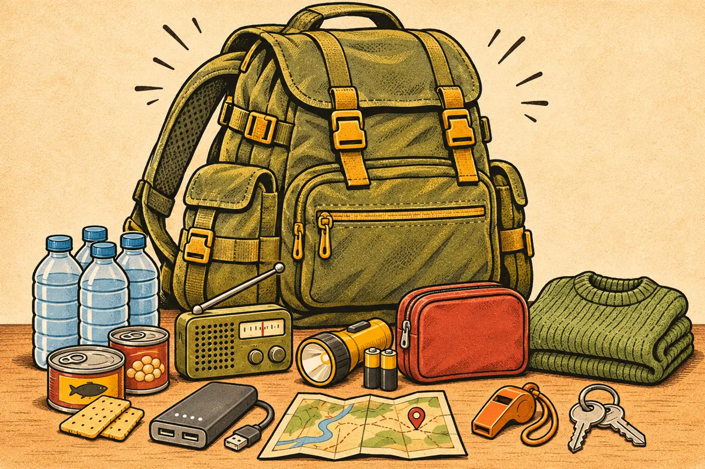
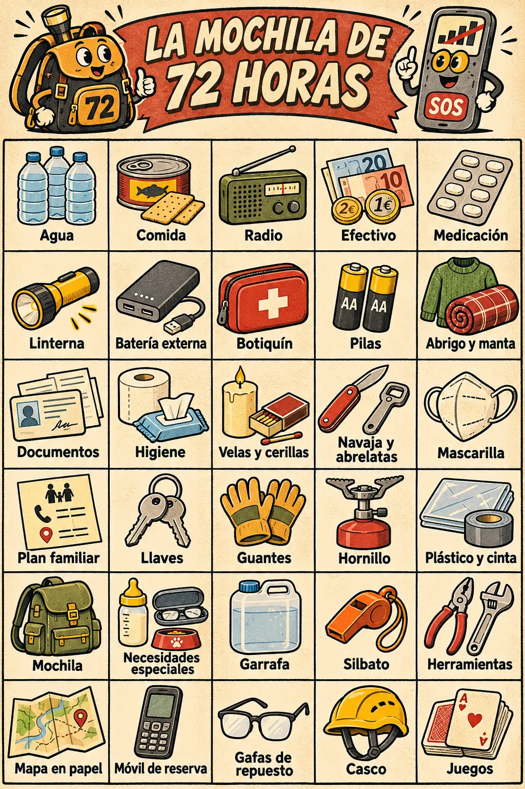

La mochila de 72 horas es una medida permanente
SE-CONRED
CONRED aclara que su recomendación forma parte de la preparación habitual. Pide verificar los avisos en canales oficiales antes de compartirlos.
Leer el original de SE-CONREDQué conviene tener a mano y por qué. Recorre la lista artículo a artículo y comprueba qué recomiendan las guías oficiales.

Ocho capítulos de preparación civil para España, con Mochi y Barritas. Incluye una lista de suministros y una ficha de emergencia para tu hogar.

Las primeras horas de una emergencia son las más difíciles: los servicios de emergencia están desbordados y lo que tengas en casa es lo que hay. Por eso cada vez más gobiernos piden a los hogares que puedan apañarse solos unos días.
La Comisión Europea recomienda que cada hogar pueda cubrir sus necesidades básicas durante al menos 72 horas sin ayuda de fuera.
Estrategia de Preparación de la UE · marzo 2025El 28 de abril de 2025, España y Portugal se quedaron sin luz durante horas: sin datáfonos, sin semáforos y con el móvil sin servicio.
Apagón ibérico · 2025Gobiernos y organismos que hemos consultado. Hay tres cosas que repiten los diez: agua, comida y una radio de pilas o de manivela.
Ver la tabla más abajoCada país adapta el kit a sus riesgos: tormentas, inviernos duros, terremotos o apagones. Pulsa en la fuente para leer la guía original.
Cuantos más países lo recomiendan, más arriba en la lista.
Ordenado de lo que recomiendan más países a lo que recomiendan menos. Cuando sale el vídeo de un artículo aparece como CON VÍDEO. Marca lo que ya tengas: tu progreso se guarda en este navegador.

Los 30 artículos de la lista en una lámina de Mochi y Barritas. Consulta las fichas de abajo para saber qué recomiendan las guías y cómo usar cada artículo.
Ver la lámina a tamaño completoComunicados y guías de organismos públicos de cualquier país sobre la preparación en casa y la mochila de 72 horas. Cada ficha indica su fecha y el ámbito al que se refiere.
SE-CONRED
CONRED aclara que su recomendación forma parte de la preparación habitual. Pide verificar los avisos en canales oficiales antes de compartirlos.
Leer el original de SE-CONREDComisión Europea
La Comisión publica directrices no vinculantes para los Estados, incluida la preparación de los hogares para cubrir sus necesidades básicas durante al menos 72 horas.
Leer el original de Comisión EuropeaASEM112
La Comunidad recuerda a los municipios que revisen sus planes de inundación y aconseja tener a mano documentación, medicación, linterna, agua, comida y radio a pilas si toca evacuar.
Leer el original de ASEM112Gobierno de Francia
La guía reúne pautas ante distintos riesgos, explica los canales de alerta e incluye una lista para preparar un kit de 72 horas. La página oficial se actualizó el 14 de agosto de 2026.
Leer el original de Gobierno de FranciaCada vídeo empieza con una noticia real y repasa un artículo de la mochila: para qué sirve y qué dicen las guías.